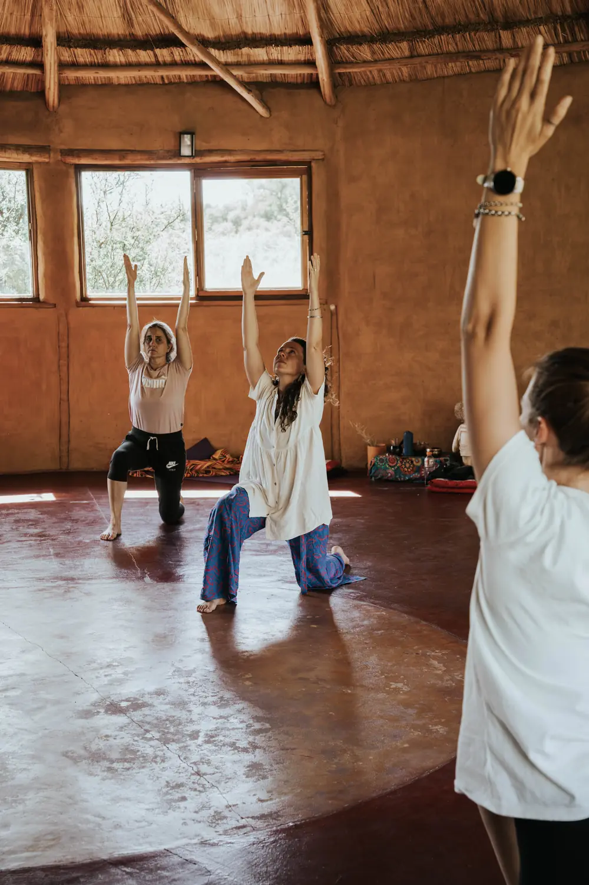

1 h 15 min · Práctica
Hatha Yoga · Cuerpo, respiración y meditación
Una práctica integral que combina asanas, respiración consciente, Pranayamas, relajación y meditación.
La clase se adapta al momento del retiro y al grupo: puede ser una práctica más activa y energizante, o una experiencia más introspectiva y restaurativa.
Consultar por esta propuesta →
USD 150